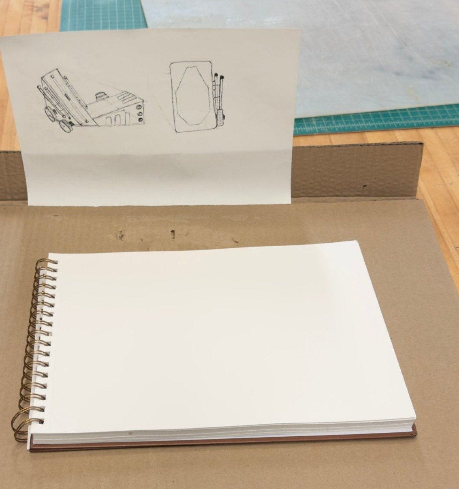
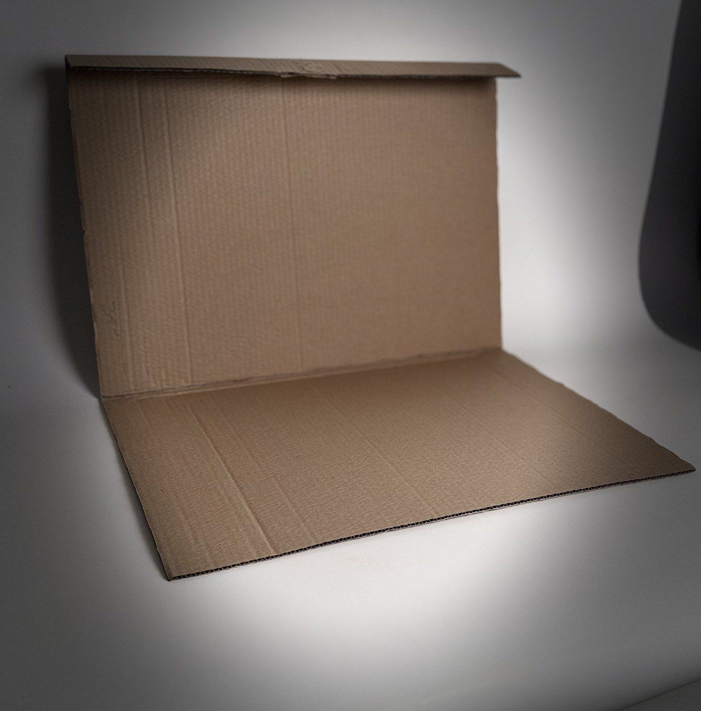
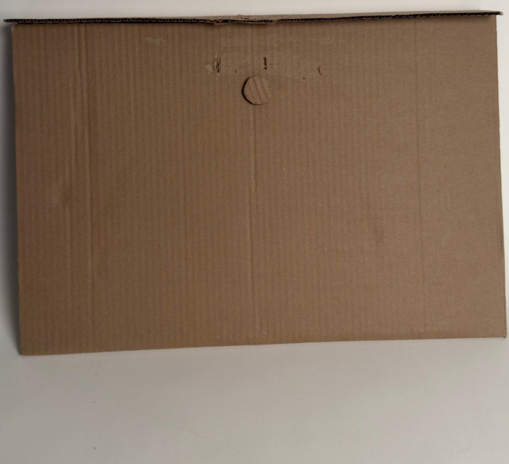
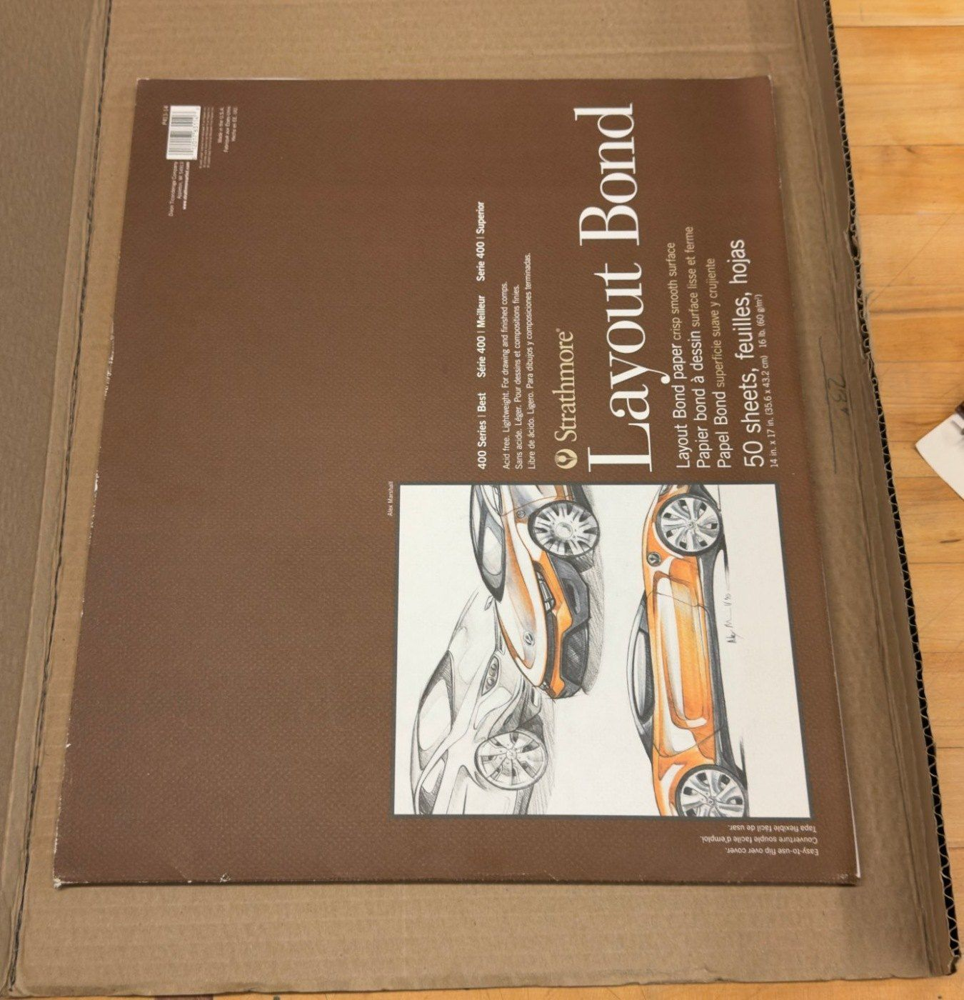
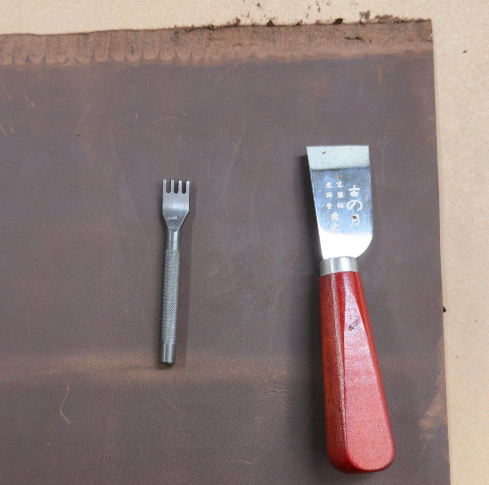
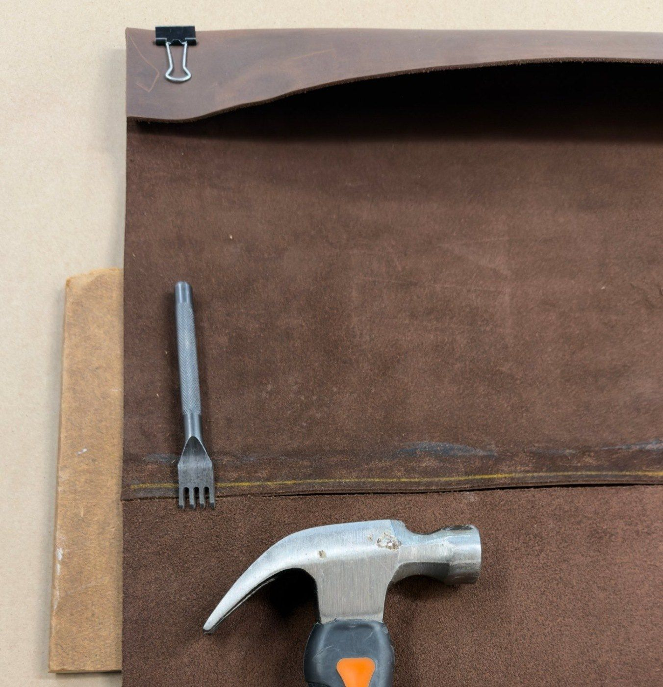
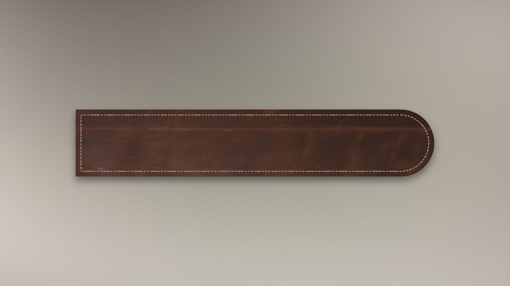

Case study 03 · Leather portfolio case
V-Folio
A hand-stitched case in natural, vegetable-tanned leather. Water-resistant, and it only gets better with age.
MaterialVeg-tan leather
Fits14 × 17 in pad
Year2026
 Hand-stitchedSteel key & keeper
Hand-stitchedSteel key & keeper
Process
Sized for the sketch pad, not the other way around.
A full-size cardboard mockup set the proportions around a 14 × 17 in layout bond pad, with a fold-over flap. The pattern then moved into leather: cut, marked and punched with a pricking iron for hand-stitching.






Closure
A steel key and keeper on leather straps.
The flap closes with a steel key that turns through a steel keeper, both carried on veg-tan straps instead of a standard clasp.
